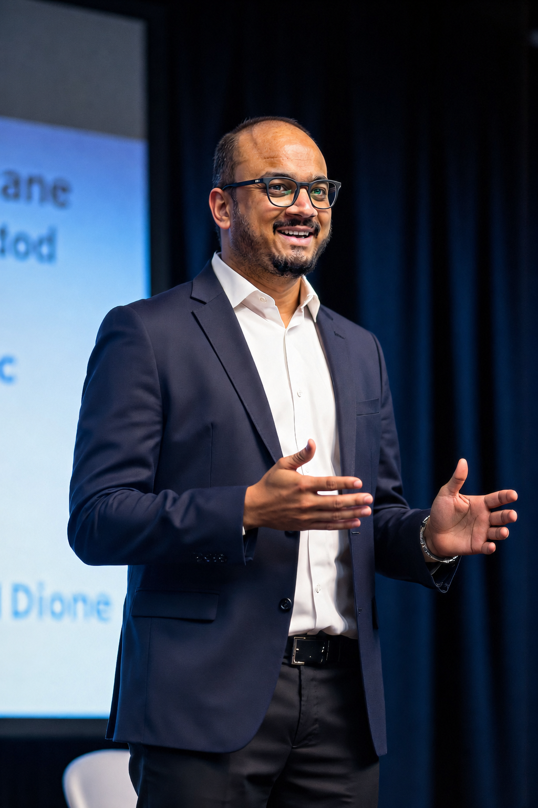
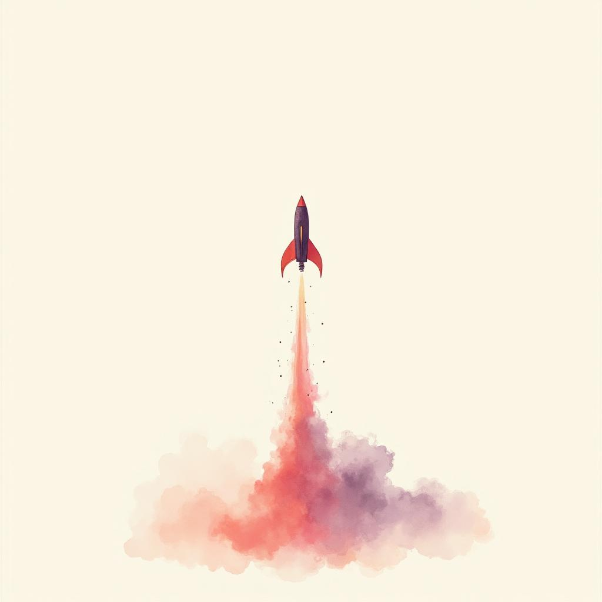
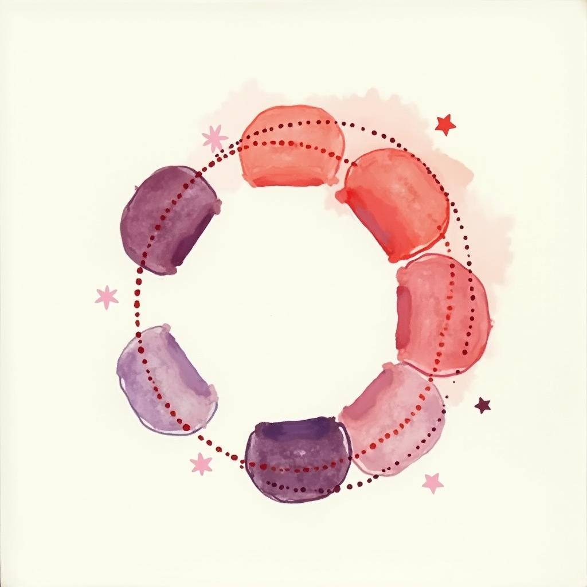
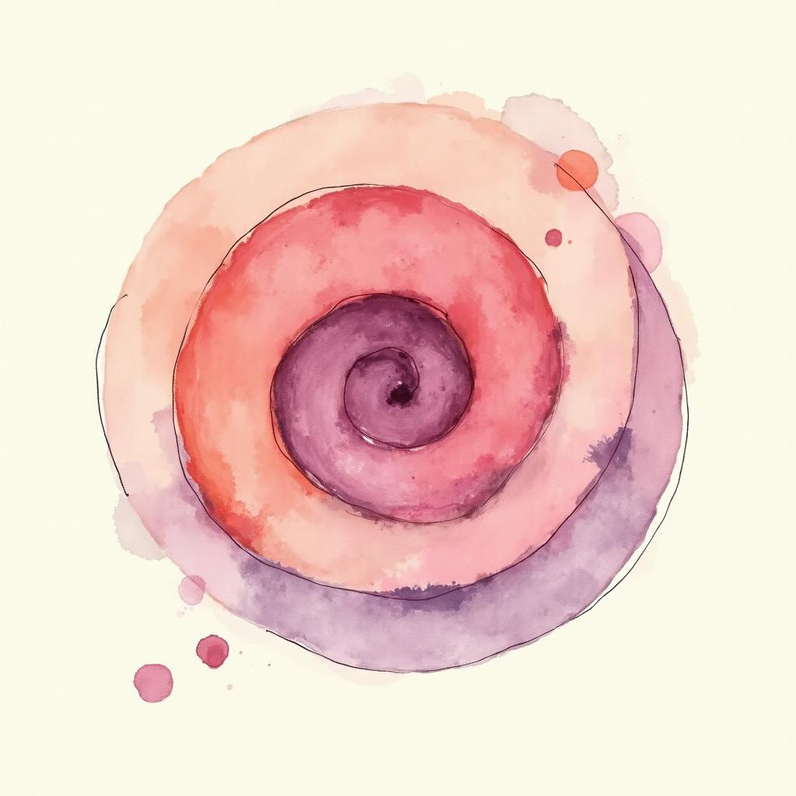

Session vi · Trainer's Handbook
Vibe Code.
No Code.
No Limits.
Vibe Coding | Building Websites | Building advance apps & systems
Nik Patel · AI Systems Coach · Business Growth Mentor · Scaling Strategist at Embark AI Institute
Cohort — Engineering Faculty, HODs, Principals & PhD Scholars

About the trainer
Nik Patel
AI Systems Coach, Embark AI Institute
Founder, NineGravity
Background
For the past 14+ years, I've worked at the intersection of sales, operations, marketing, finance, leadership and technology — helping businesses grow with practical execution, not theory.
After building and scaling my own ventures from the ground up, I shifted a major part of my focus toward coaching founders, professionals and growth-focused teams on how to use AI systems, operational thinking and scalable business frameworks to move faster and make better decisions.
My work combines real-world business experience with modern AI adoption — helping people simplify operations, improve execution and scale sustainably in today's fast-changing market.
I believe growth comes from continuous learning, disciplined action and building systems that create long-term leverage.
What I do
- Coach entrepreneurs and professionals on AI systems and practical AI implementation.
- Help businesses improve growth, operations and scalability.
- Teach execution-focused frameworks based on real business experience.
- Mentor founders and teams on leadership, systems thinking and decision-making.
- Conduct coaching sessions, workshops and learning programs with entrepreneur and business communities.
Personal philosophy
“Keep learning. Keep building. Keep moving forward.”
Outcomes
What you walk out with.

01 — Built
A live, deployed page or prototype
Built entirely with AI assistance. No prior coding required.

02 — Repeatable
A 5-layer workflow you can reuse
Content → Context → Design → Dev → QA. Works for any future build.

03 — Mental model
When to vibe-code & when not to
And how to teach this to your students.
Questions for the room
Before we begin. Four questions.
- Has anyone here actually built a site or app using an AI tool? Which one? And what happened?
- What are your real pain points. The things you wish a small app would handle for you?
- When you hear "vibe coding". Hope, suspicion, or confusion? All three are fine.
- Who has paid a developer to build something? How much, and how long did it take?
Vibe Coding
What it actually is.
- You describe what you want in English. The AI writes HTML, CSS & JavaScript.
- It is not magic. The AI is translating your spec into well-known patterns it has seen thousands of times.
- You are still the architect. You decide what to build, what looks good, and what works for your audience.
- AI is the contractor, not the client.
Vibe Coding · failure modes
Where it fails.
- Genuinely novel UI patterns the model has never seen.
- Complex backend logic with deep business rules. Without proper instructions and execution.
- Real-time integration with institutional ERP, finance systems or proprietary databases. These almost always need a human developer.
Know the edges before you ship the middle.
The Four-Layer Stack
The four-layer stack.
| Layer | What it means | Tool we'll use |
|---|
| Frontend | What the user sees in the browser. The page itself. | Lovable.dev · v0.dev · Claude · Bolt.new |
| Hosting | The server where the page lives so others can visit. | Vercel (free tier) |
| Domain | The web address. E.g. yourcollege.edu/cse-portal | Vercel URL first; custom domain later |
| Backend (optional) | Database and server logic. Only if you collect or store data. | Supabase (free). Only if needed |
Display-only = Frontend + Hosting + Domain. Login or submit = add Backend.
The Four-Layer Stack · Diagram
Frontend · Hosting · Domain · Backend.
The 5-Step Build Workflow
Describe · Generate · Review · Refine · Deploy.
Describe
Be specific. Clearer prompt → closer first output. Vague prompts produce generic AI-looking sites.
Generate
Let the AI build v1. Usually under two minutes. Don't interrupt. Wait, then look.
Review
Open it. Click around. What works? What's wrong? What's missing? Be honest.
Refine
Tell the AI in plain English. Iterate 3–5 times. "Make the hero taller." "Lighten the navy." "Add a phone field."
Deploy
Push to Vercel or GitHub Pages. Live URL in under five minutes. Shareable, public, free.
The 5-Step Build Workflow · Diagram
Describe · Generate · Review · Refine · Deploy.
When NOT to Vibe Code · myths
When not to vibe code.
- Anything handling student grades, financial data or personal information. Without IT department review.
- Anything where bugs have legal consequences. Admission portals, grade publishing.
- Sites that must integrate with institutional ERP. That needs a developer.
Everything Comes With a Price
Nothing is free.
10× ↓
Time investment
300 Days → 30 Days
What took nearly 10 months in 2021–22 can now be built in under 30 days.
10× ↓
Manpower need
What once required large execution teams can now ship with lean, AI-powered operators.
That's not a productivity tweak. That's a structural shift.
AI & automation have fundamentally compressed the cost, time and manpower curve.
Story: Sherunsit.org, a non-profit my team built in 2022. Two guesses: how long did it take, and how much did I charge?
Live Demonstrations
Tools & methods.
Tools we will use
- Claude. Web, app, Claude Code (terminal), Claude Cowork, Claude Design
- Lovable.dev
- Bolt.new
Three entry points
- Terminal. Claude Code, for those comfortable with a command line.
- App. Claude desktop / Cowork, for a focused workspace.
- Web. Claude.ai, Lovable.dev, Bolt.new. Zero install, just a browser.
Building with Claude
The 5-layer build process.
Whether the final tool is Claude, Lovable or Bolt. The process underneath stays the same. Skip a layer and the output suffers in a predictable way.
Layer 01
Content
Copy that converts. Verified line by line.
Layer 02
Context
Brand colours, fonts, tone. The look-and-feel brief.
Layer 03
Design
The build prompt + your chosen tool. Compare outputs.
Layer 04
Dev & DB
Supabase, local DB or APIs. Only if needed.
Layer 05
QA & Modify
Click everything. Open on phone. Watch a real user.
Spend a few minutes more on Content & Context up front. The rest of the build moves 2× faster.
Content
Layer 1. Content.
How to write copy that converts.
- Capture the existing content. Whatever you have today, even three bullets scribbled on a notice.
- Give Claude the conversion formula and the context: who is reading this, what should they do after, what makes them hesitate.
- Ask Claude to revise it into a sales-style landing page version. Short, scannable, action-oriented.
- Verify the output line by line. This is your reputation on the page.
Context · Branding
Layer 2. Context.
Now Claude knows what to say. It needs to know how it should look.
Before the build prompt
- Brand colours. Primary, secondary, accent. No palette? Pick three colours and stick to them.
- Fonts. One for headings, one for body. Google Fonts pairs work perfectly.
- Tone. Formal, friendly, energetic, academic? One word is enough.
Why branding matters
Without consistent branding, every AI output looks like every other AI output. That is the actual reason "AI-generated" became an insult. Not the code, the look.
Three colours, two fonts. 10× more credible.
The Highest-Leverage Move
The clever move.
Don't write the build prompt yourself. Give Claude (or ChatGPT) your brand guidelines plus your finalised content. And ask the AI to write the build prompt for you.
AI is better at writing prompts for AI than you are.
Design
Layer 3. Design.
Paste the AI-written prompt into your build tool. Run it through several. Compare.
Claude. Four ways
- Claude in VS Code / Antigravity
- Claude in the terminal (Claude Code)
- Claude Design
- Claude Code. Full project mode
Now compare
- Same brief → Lovable.dev
- Same brief → Bolt.new
- Which produces the cleanest first draft? Which understands your branding best? Which one do you actually enjoy?
The answer is personal. There is no universal winner.
Development & Database
Layer 4. Dev & DB.
If your site needs to remember anything. Registrations, submissions, attendance. You need a database.
Default
Supabase integration
Free, hosted database. Connects in three clicks. The default for any project leaving the prototype stage.
CHECK DOC →
Restricted
Local database integration
For projects that must stay inside the institution's network.
Extend
API integrations
Magnific for upscaled hero video. Image gen, payments, analytics, email, calendar. Anything with a documented API.
QA & Modification
Layer 5. QA & modify.
Before sharing the URL with anyone:
- Click every link. Every button. Every form field.
- Open it on a phone. Most AI sites look great on laptop and break on mobile. Catch this early.
- Have one colleague try it without instructions. Watch where they hesitate.
- That hesitation is the bug. Even if the code is technically fine.
Iterate until the experience is smooth. Not just the code.
Beyond the Website
Designing anything.
The Content → Context → Design loop works for everything else. Same prompting style, different output medium.
01
Brochures
Event flyers, programme leaflets, department info packs.
02
Banners
Social posts, conference standees, classroom posters.
03
Figma files
When you want a designer to take the next step.
04
Anything else
Literally anything you'd have outsourced to a junior designer.
Figma + Claude. The MCP connector lets Claude read and write directly to your Figma files. Worth setting up.
Going Live
Three deployment paths.
| Option | When to use | Time to live URL |
|---|
| Vercel | Default choice for any standalone site or app. Free tier is generous. | ~5 minutes |
| Artifacts (claude.ai) | Quick demos, single-page tools, embedded interactive prototypes. | Instant |
| GitHub Pages | Static sites you want under a github.io URL. Free, forever. | ~10 minutes |
Hands-On Tasks · do these today
Six things. before you leave.
01
Recreate
Find a live site you admire. Recreate 3–5 of its pages using Claude or Lovable.
02
Supabase
Create a Supabase account. Free tier is enough for any departmental project.
03
Connect a DB
Wire a database to one of your generated sites. Even just a contact form that saves submissions.
04
Lovable.dev
Create a Lovable.dev account.
05
Bolt.new
Create a Bolt.new account.
06
Figma + Claude
Test the Figma + Claude connection. Even once, to know what's possible.
The accounts you don't create today, you won't create on Monday. Block five minutes. Do all six.
Building Real Web Applications
A landing page is a starting point.
The real shift happens when you build something that solves a problem. A small web application your department, lab or research group actually uses every week.
Start with the problem
A handpicked set of five problem-statement ideas lives in the shared resources folder. Pick one and start.
Context-saving tip. Close one chat between layers, start a new one with just the relevant summary. Costs drop, accuracy goes up.
The 9-Layer Build Path
Build it layer by layer.
A web application is more than a webpage. Skipping ahead always costs more time than it saves.
Teaching Students · Idea to Launch
The thing that matters isn't the tools. It's the loop.
Most engineering graduates never learn this habit. The ones who do, build companies.
Spot problems
Look at any business, any noticeboard, with the eye of someone asking "what's broken. Could I fix it?"
Capture instantly
Notes app, voice memo, anywhere. The thought you don't capture in 60 seconds is gone.
Implement as MVP
A working, ugly version that proves the idea. Fast.
Find similar people
Share it. Measure interest. Actually measure. Don't guess.
7 of 10 → go
Below 5, drop it. Between 5 and 7, dig deeper before deciding.
Find partners
Solo builds are slower and lonelier. Partnerships compound.
Free, limited usage
Get real users. Watch what they do vs what they say.
Then aggressive build
When users will pay, push marketing, dev, polish, UX, launch.
My Rule of Success
Don't go for perfection.
Chasing perfection breeds competitors who shipped while you polished.
“Imperfect is perfectly perfect.”
Thought
→
Implement
→
Validate
→
Iterate
→
Again implement
→
Validate
→
On-going
Example: My Post, Customer: Shivalik Builders (Largest Real-Estate Group)
Idea · Run a Vibe Coding Competition
Make it a permanent capability.
- Run an open competition. Curate a list of ideas, students pick from it.
- Build in groups, not solo. Students teach each other prompting tricks in real time.
- Publish qualifying criteria up front: code quality, UX, business viability, innovation.
- Keep IP under the university. Fair exchange for platform, mentorship and visibility.
- Real rewards: cash, gifts, sponsorships. Most of all, recognition. That's what students remember years later.
Who knows,
The next ChatGPT or Anthropic might be built by a CHARUSAT student.
Strike Partnerships with AI Labs
The move most institutions aren't making.
Cost of making it: one email.
The play
- Identify the AI tools your team and students will need most.
- Email those companies directly. Institutional address.
- Ask for student pricing, education licences or campus partnerships.
- Frame it as a fair exchange: visibility, case studies, beta feedback → licences.
What to ask for
- Free licences for X students and Y faculty for the academic year.
- Sponsorship for a session, hackathon or annual event. In exchange for the licences.
- A company representative speaking once per semester. Exposure for students, recruiting funnel for the company.
Every AI company is in a market-share race. Worst case: they say no.
The Monday Morning Test
Did this session work?
The real measure is not whether you found it interesting. It's whether, on Monday morning, you do something differently.
- You will have a live URL. A webpage or small app you built today. To share with a colleague.
- You will have signed up for Lovable, Bolt and Supabase. Three accounts, ten minutes, free.
- You will know which of the three Claude entry points (terminal · app · web) actually fits how you work.
- You will be able to name the 5-layer process from memory: Content · Context · Design · Dev & DB · QA & Modify.
Teach the loop to one student in the next two weeks.
And it keeps working long after we leave the room.